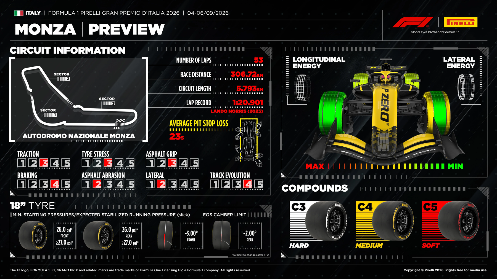

Pirelli · confirmed
Tyres & Strategy
The official C3/C4/C5 allocation and Pirelli's Monza-specific 2026 forecast.
Confirmed: Pirelli bring the softest trio in the 2026 range:
C3 hard, C4 medium and C5 soft. Each driver receives two hard sets,
three mediums and eight softs, plus the wet-weather allocation.
Pirelli's Monza preview graphic

Pirelli's 2026 read
- Team simulations predict lap times around two seconds faster than in 2025.
- The front axle should see lower braking loads because the new cars approach the braking zones at reduced speed.
- The rear axle faces greater traction demand when full power is deployed.
- Braking stability and traction out of the First Chicane and Ascari are the headline performance factors.
Likely strategic shape
- Monza is traditionally low degradation and a one-stop race, but the softest allocation broadens the undercut window.
- Track position is less binding than at many circuits because slipstreaming and late braking offer recovery chances.
- Hot conditions increase the risk of rear-tyre overheating under traction.
- Friday long runs will determine the real degradation picture under the new rules.
Long-run degradation data not published yet. Usually published after Friday practice. This section fills in automatically the next time the site is built after the source goes live.
Source: Formula1.com / Pirelli Italian Grand Prix tyre preview, 2 Sep 2026.
FIA tyre prescriptions (Document 3, Competition Notes — Pirelli Preview)
Race-tyre nuance: the mandatory-race-tyre panel names only C3 and C4
— every driver must use both compounds across the race. The softest C5 is reserved for one-lap
pace: it is designated the Q3 tyre, so its heaviest race use is likely to come from
drivers eliminated in Q1/Q2 rather than the top-10 runners who start on their Q2 time.
| Slick axle | Min. starting pressure | Expected stabilised pressure | Camber limit |
|---|---|---|---|
| Front | 26.0 psi | ≥27.0 psi | −3° |
| Rear | 26.0 psi | ≥27.0 psi | −2° |
Wet-weather prescriptions (for reference): intermediates run 28.0 psi minimum starting/≥29.0 psi stabilised on both axles (−3.25° front / −2.5° rear camber); wets run 26.0 psi minimum starting/≥29.0 psi stabilised (same camber limits as intermediates). Source: FIA 2026 Italian Grand Prix — Competition Notes: Pirelli Preview (Document 3, issued 2 Sep 2026) via the FIA Italian Grand Prix documents hub.